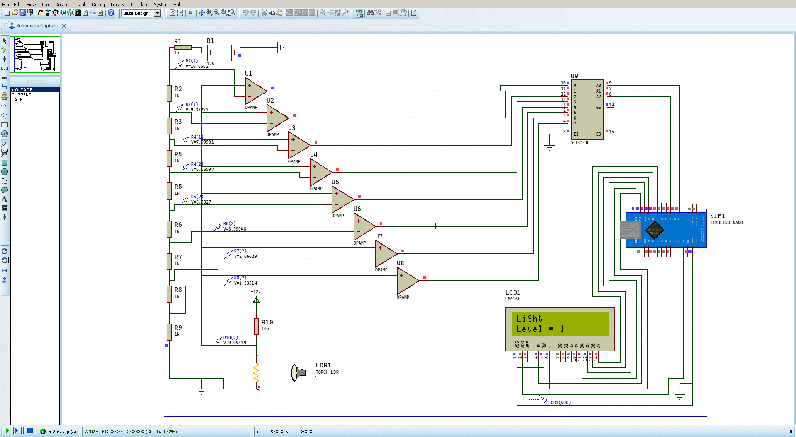
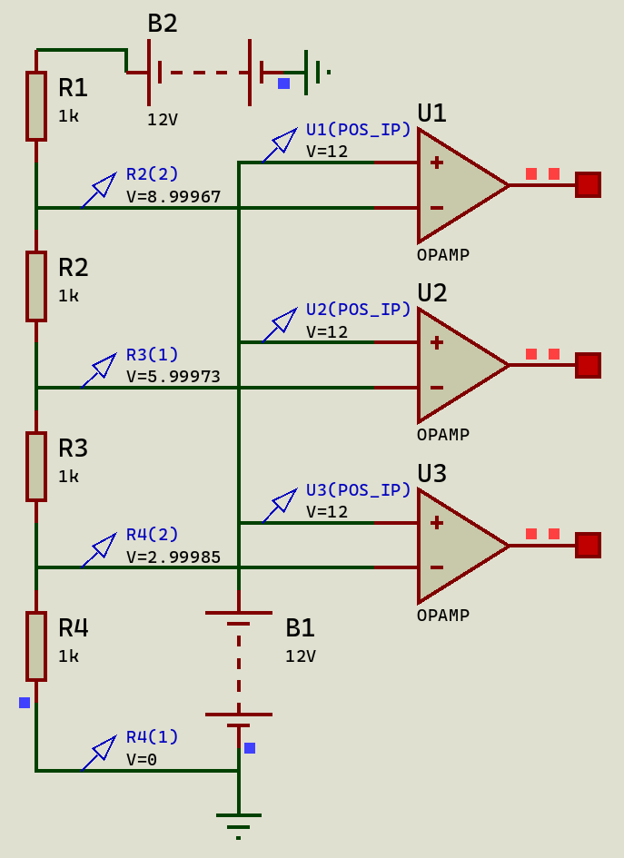
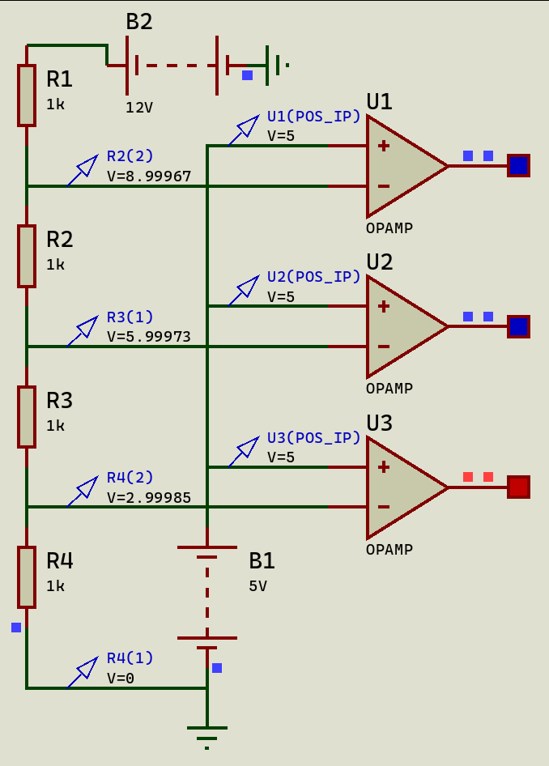
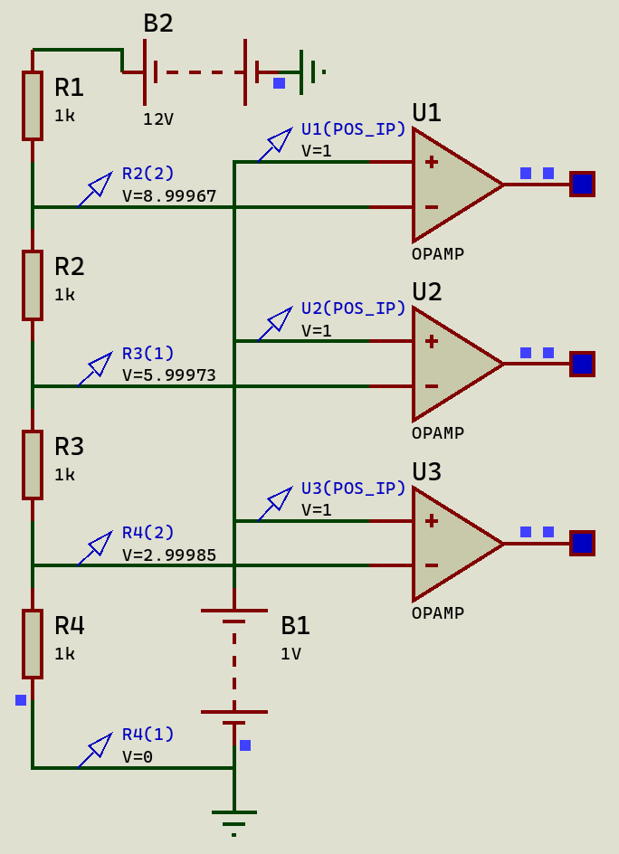
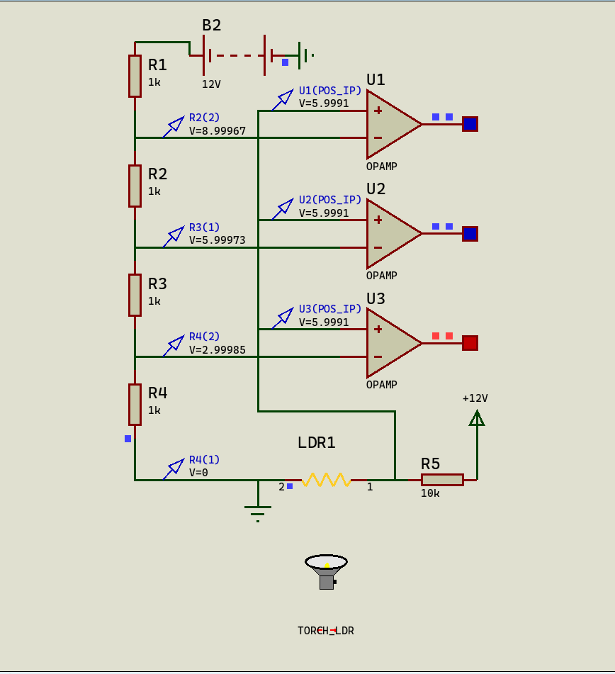

Simulasi Flash ADC
UTS atau Ujian Tengah Semester untuk tahun ini cukup menarik dikarenakan adanya pandemi sehingga (mungkin) mengharuskan seluruh dosen untuk membuat ujian yang sifatnya tugas, dengan tujuan memperlihatkan bahwa mahasiswanya sudah menguasai materi yang diberikan tanpa adanya kekhawatiran mengenai contek-menyontek.
Yang membuat saya senang adalah jenis ujian ini menurut saya jauh lebih bagus dibanding jenis ujian sebelumnya (saat offline) dimana mahasiswa hanya diharuskan mengerjakan soal yang biasanya tidak relevan dengan dunia industri aslinya, akan tetapi dengan pembuatan UTS yang menyerupai tugas ini sangat menarik karena bisa memperlihatkan potensi masing masing mahasiswa sekaligus dengan tidak adanya peraturan aneh seperti tidak boleh buka internet (karena pada dasarnya saat pengerjaan projek real, pasti harus buka internet untuk mencari hal yang tidak diketahui) dan juga tidak perlu mengingat rumus, karena ini juga termasuk hal yang aneh lainnya, rumus bagi saya bukan untuk diingat sama hal nya dengan syntax pada programming, mereka itu untuk dipahami.
Dan yang lebih menarik perhatian saya adalah UTS pada mata kuliah Sensor dan Aktuator, menurut saya para dosennya sudah sangat baik dalam membuat UTS berbentuk seperti ini (really appreciate that 👏), berikut penjelasan singkat mengenai UTS pada matkul ini.
Mahasiswa diberikan waktu selama 12 jam, dalam kurun waktu tersebut masing-masing mahasiswa disuruh untuk membuat sebuah projek kecil yang harus melibatkan sensor, filter dan/atau op-amp, dan sebagai outputnya berupa LED dan/atau LCD dan/atau Relay, dengan ketentuan sensor berdasarkan nim terakhir yang dimiliki tiap mahasiswa, berikut merupakan list nya.
- NIM terakhir 0. Sensor kecepatan menggunakan encoder
- NIM terakhir 1. Sensor kelembaban
- NIM terakhir 2. Sensor pH
- NIM terakhir 3. Sensor level suara
- NIM terakhir 4. Sensor tekanan/ gaya/ berat
- NIM terakhir 5. Sensor cahaya
- NIM terakhir 6. Sensor gas buang (pilih salah 1 : CO, NO, CO2)
- NIM terakhir 7. Sensor kekeruhan air
- NIM terakhir 8. Sensor suhu
- NIM terakhir 9. Sensor jarak
Dikarenakan saya memiliki nim 1102174055 maka nim terakhir saya adalah 5, yang berarti saya harus menggunakan sensor cahaya.
Sneak-Peek
Berikut hasil dari projek kecil yang saya buat untuk uts ini, saya selesaikan dalam waktu kurang lebih 10 jam (maklum masih noob :v).

Dalam projek ini saya membuat sebuah sistem dengan runtutan seperti berikut:
1. Cahaya --(masuk kedalam)-> LDR
2. LDR --(merubah resistansi, lalu masuk kedalam)-> Flash ADC
3. Flash ADC --(merubah sinyal analog menjadi digital, lalu masuk kedalam)-> Arduino (Mikrokontroller)
4. Arduino --(merubah output pada LCD)-> LCD
5. LCD (menampilkan output sesuai arduino)
Berikut lampiran hasil projek yang saya buat di Proteus 8: project.pdsprj
Dan berikut lampiran kodingan Arduino nya: code.ino
Sensor Cahaya
Karena hanya diberikan waktu 12 jam (sebenarnya bisa saya katakan ini waktunya lebih lama dari seharusnya wkwk, karena kalau udah terbiasa membuat rangkaian seharusnya 2 jam pun selesai), maka dari itu saya memilih sensor cahaya yang sangat sederhana yaitu LDR(Light Dependent Resistor).
Singkatnya, LDR merupakan jenis sensor cahaya dimana semakin tinggi intensitas cahaya yang diterima maka akan semakin kecil nilai resistansinya.

sumber: researchgate
Dengan menggunakan efek dari LDR ini kita bisa membuat suatu hal yang bekerja berdasarkan intensitas cahaya yang didapatkan oleh LDR nya itu sendiri.
Signal Conditioning
Efek dari LDR menghasilkan sebuah nilai resistansi yang berubah seiring perubahan intensitas cahaya yang didapatkan, akan tetapi bentuk sinyal dari nilai resistansi nya terlalu sulit untuk saya bisa gunakan dengan mudah (bisa dilihat diatas bentuknya yang melengkung aneh seperti itu).
Maka dari itu saya harus bisa mengubah sinyal berbentuk melengkung aneh itu menjadi sebuah sinyal yang akan mempermudah saya dalam menganalisa sistem yang sangat bergantung pada intensitas cahaya yang akan saya buat ini.
Dan berdasarkan rencana saya, maka saya akan mengubah sinyal analog yang melengkung aneh yang merupakan hasil dari LDR itu menjadi sinyal digital yang terurut dari 000 hingga 111 sehingga akan sangat mempermudah saya untuk menganalisa selanjutnya.
Langkah ini disebut dengan Signal Conditioning.
Flash ADC
Seperti yang saya telah tulis diatas, saya akan menggunakan Flash ADC yang akan berguna untuk mengubah sinyal analog menjadi sinyal digital yang saya inginkan yaitu 000 - 111.
Flash ADC bekerja dengan cara menggabungkan OpAmp Comparator dengan Priority Encoder.
OpAmp Comparator secara sederhananya bekerja dengan cara membandingkan tegangan pada input positif (non-inverting input) dengan input negatif (inverting input), dan dilakukan perbandingan seperti berikut:
Jika input positif > input negatif, maka output akan menghasilkan tegangan yang sangat tinggi yang bisa kita anggap sebagai sinyal high (1).
Jika input positif < input negatif, maka output akan menghasilkan tegangan yang sangat rendah yang bisa kita anggap sebagai sinyal low (0).
Selanjutnya, Priority Encoder bekerja dengan menghasilkan sinyal digital output bergantung kepada sinyal digital pada input dengan menyesuaikan pada tabel kebenaran berikut:

sumber: electronics-tutorials.ws
Intinya, Priority Encoder hanya akan melihat nilai high (1) dari input tertinggi (D7) ke terendah (D0), jadi pada saat ada input dengan urutan (D0 - D7) berupa 11100000 maka akan mengoutputkan 010 karena input tertinggi dengan nilai high (1) merupakan D2, sementara nilai high pada input dibawah D2 yaitu D1 dan D0 tidak akan dilihat.
Dengan kombinasi ini kita bisa membuat Flash ADC, namun ada satu hal yang kurang dari sistem ini (mungkin pembaca yang teliti akan langsung mengetahuinya) yaitu bagaimana kita bisa membuat sebuah rangkaian OpAmp Comparator yang bisa mengoutputkan 8 buah sinyal digital secara beragam (00000000 - 11111111) yang nantinya akan masuk kedalam Priority Encoder dan menghasilkan output (000 - 111), sementara variable yang bisa kita ubah hanyalah nilai dari resistansi LDR.

Voltage Divider to the rescue
Inilah alasan mengapa pada Flash ADC tidak hanya terdapat OpAmp Comparator dan Priority Encoder.
Dengan adanya rangkaian voltage divider / pembagi tegangan, maka kita bisa dengan mudah membagikan tegangan pada tiap inputan OpAmp Comparator, masih bingungkan ? wkwk, saya akan perlihatkan menggunakan rangkaian agar lebih mudah dicerna.
  
Perlu diingat pada gambar diatas biru = LOW, merah = HIGH (ya, saya tau emang aneh wkwk)
Bisa dilihat pada Voltage probe R4(2) dia mendeteksi adanya tegangan sebesar 2.9985V, nah nilai ini didapatkan dari hasil pembagi tegangan menggunakan resistor yang dihubungkan secara seri (bisa dilihat ada R1 - R4 dengan nilai resistansi 1k ohm), dengan perhitungan sebagai berikut :
Dimana Vin adalah B2 pada gambar diatas, Rb adalah Resistor Bawah dari output tegangan yang ingin kita ketahui, R adalah seluruh resistor pada rangkaian pembagi tegangannya.
Jadi untuk mendapatkan nilai pada Voltage probe R4(2), kita bisa lihat resistor bawahnya hanya ada R4 maka bila kita masukkan kedalam rumusnya menjadi :
Yang seharusnya menghasilkan 3V, walaupun real nya kurang sedikit yaitu 2.9985V.
Nah, bisa kita liat perbedaan pada ketiga gambar diatas terlihat jelas pada Vref atau B1 nya dimana disaat B1 nya memiliki tegangan sebesar 12V maka output dari setiap OpAmp nya HIGH atau ditandai dengan warna merah, dan disaat B1 hanya memiliki tegangan sebesar 5V maka hanya OpAmp paling bawah yang mengoutputkan nilai HIGH.
Hal itu terjadi dikarenakan saat B1 bernilai 5V maka satu-satunya OpAmp yang memiliki nilai input negatif (inverting input) lebih rendah dari 5V yaitu OpAmp terakhir dimana nilai input negatif nya sebesar 2.9985V karena efek dari pembagi tegangan yang sudah dijelaskan sebelumnya tadi.

Gimana ? mindblown kan wkwk, saya merasa demikian karena ternyata dengan mengkombinasikan runtutan efek dari berbagai jenis rangkaian dan komponen bisa menghasilkan yang sedemikian rupa.
Dengan demikian lengkap lah sudah seluruh rangkaian Flash ADC kita, karena dengan adanya pembagi tegangan seperti diatas kita bisa mengatur output keluaran sinyal digital sesuai dengan Vref atau B1 pada rangkaian di gambar atas tersebut.
Combination

Sekarang, masuk ke tahap terakhir yaitu menggambungkan semua rangkaian diatas sebagai berikut:
LDR -> Flash ADC -> Arduino -> LCD
Untuk menghubungkan LDR dengan Flash ADC nya kita cukup mengganti Vref atau B1 pada gambar diatas tadi, dengan rangkaian LDR yang bisa kita buat dengan konsep pembagi tegangan juga.

Perlu diingat bahwa disini saya hanya mencontohkan dengan menggunakan 3 OpAmp Comparator yang seharusnya pada real case kita menggunakan 8.
Selanjutnya kita hubungkan output dari setiap OpAmp menjadi input dari Priority Encoder, pada Proteus 8 kita bisa menggunakan modul 74HC148.
Lalu hubungkan output dari Priority Encoder nya ke Arduino, dan karena outputnya sudah berupa sinyal digital maka kita hubungkan ke pin Digital pada Arduino nya pada projek saya, saya hubungkan ke pin D2, D3, dan D4.
Setelah itu hubungkan Arduino nya dengan LCD dan buat program untuk mengubah binary 000 - 111 menjadi bilangan desimal 1 - 8, untuk bagian ini saya tidak akan menjelaskan karena sudah OOT hehe, tapi setidaknya untuk bagian convert binary ke desimal saya menggunakan potongan kode berikut :
// Saya balikkan menjadi (8 - X)
// karena ternyata saya masangnya kebalik :v
result = abs(8 - ((val1*4) +(val2*2)+ val3))
// Seharusnya jika masangnya benar bisa langsung
result = ((val1*4) +(val2*2)+ val3)
Dan dengan begini, jadilah sudah keseluruhan dari projek ini, sekali lagi terimakasih kepada tim dosen yang sudah membuatkan soal yang menarik seperti ini 👍.
Referensi
Berikut beberapa referensi yang saya pakai disaat pembuatan blog ini maupun saat pengerjaan projeknya :
- https://electronics.stackexchange.com/questions/382342/ldr-issue-interfacing-with-adc
- https://www.seas.upenn.edu/~ese206/labs/adc206/adc206.html
- https://www.youtube.com/watch?v=NASkjo7s8f4&ab_channel=ALLABOUTELECTRONICS
- https://www.youtube.com/watch?v=71XWsoDl5SA&ab_channel=ColumbiaGorgeCommunityCollege
- https://www.nyebarilmu.com/rangkaian-sensor-ldr-untuk-saklar-lampu-otomatis/
- https://www.youtube.com/watch?v=QkoVvf7_f0I
Last word
Semoga artikel nya mudah dipahami dan menyenangkan, jika memang dirasa bermanfaat silahkan sebarkan kepada yang lainnya agar ilmu nya tidak berhenti disini saja.
Terimakasih kepada Allah SWT dan juga para pembaca disini, semua yang buruk datangnya dari saya dan yang baik hanya datang dari-Nya, mohon maaf bila ada kesalahan 🙏.